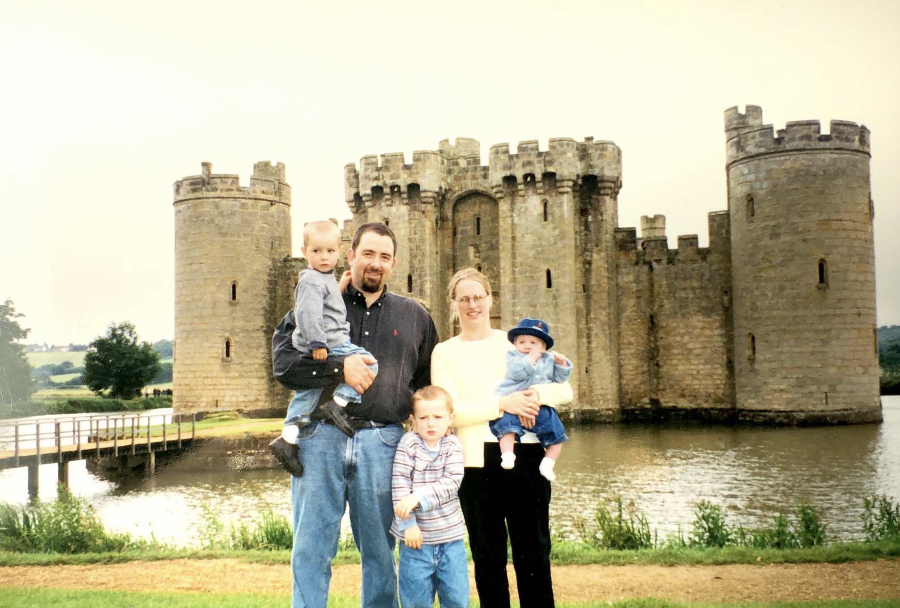

My name is Maddyn Konold. My family is originally from the San Diego area, but I was born in Cambridge, England on the eigth of February, 2000. When I was about seven months old, my family moved back to San Diego, where we lived for a few months before moving to Temecula, California. I lived there until the fall of 2018 when I moved to Provo, Utah for school.
Growing up, I played lots of sports. I played soccer for ten years, swam competitively for six, and I played water polo for the four years I was in high school. I did a year of school at BYU, and then served an eighteen month mission for the Church of Jesus Christ of Latter Day Saints in Cape Verde and Southern Florida.
I love to travel. I love being able to catch a glimpse into the way people live in different parts of the world, it is so fascinating to me. One of my favorite things to do while travelling is to visit different museums, especially when they have pieces by Claude Monet or Édouard Manet.

Right now, I am a human development major at Brigham Young University, with a minor in general business. After graduating, I am planning to attend grad school and get my Master's in social work.